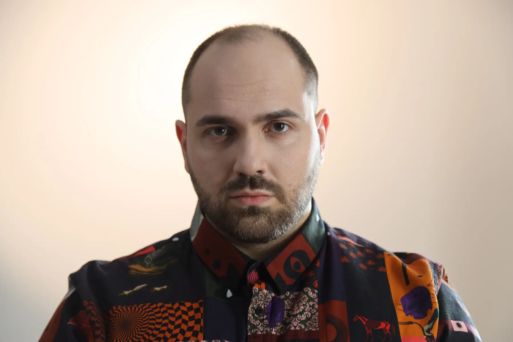
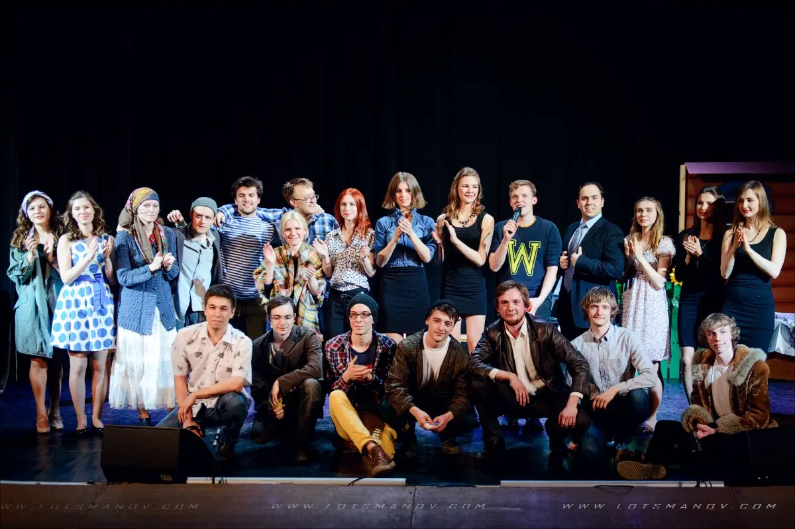
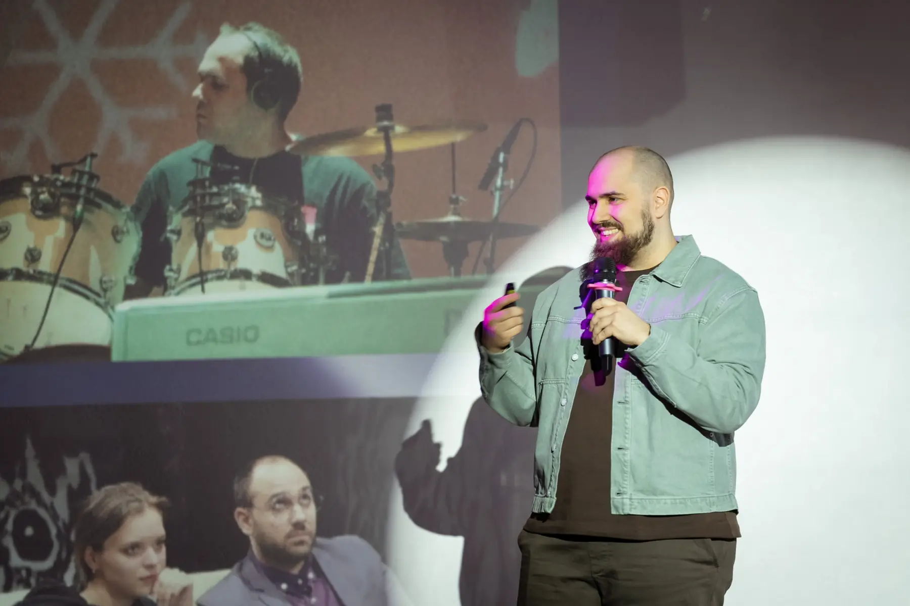

Бизнес
Позиционирование, гипотезы, экономика и маршрут продукта к рынку.
Биофизика / режиссура / продукт
Я Андрей Царёв. Предприниматель, режиссёр, сценарист и биофизик. Разбираю сложную тему, нахожу сильную форму и довожу её до результата — от научной идеи до понятной людям истории.

Предприниматель / автор / режиссёрПодход
Мне комфортно входить в задачу, где ещё неясно, что именно нужно производить. Сначала — содержание, аудитория и ограничения. Потом — продуктовая логика, драматургия, команда и технология.
Так появляется форма, которую можно показать, объяснить, продать и использовать дальше.
Четыре оптики
На сложном проекте научная точность, продуктовая польза и внимание зрителя должны работать вместе.
Позиционирование, гипотезы, экономика и маршрут продукта к рынку.
Драматургия, режиссура и визуальный язык, который удерживает внимание.
Продуктовая разработка и AI-пайплайн с пониманием реальных ограничений.
Молекулярная биофизика и привычка разбирать механику до ясной причины.
Где это полезно
От сложного медицинского материала до новой продуктовой истории.
Научная логика, мастер-ролик и адаптации для врачебных точек контакта.
Смотреть направление →Помогаю показать путь пользователя, продуктовую механику и ценность без технологического шума.
Смотреть подход →Концепция, драматургия, визуальный мир и сборка решения, которому нужно выйти за пределы одного формата.
Кейсы Anix ↗Траектория
Сильнее всего работаю на пересечении дисциплин. Когда сложной идее нужны стратегия, язык, технология и люди.
Молекулярная биофизика, структурная биология, моделирование и публикации.
Авторская и режиссёрская работа, актёрский опыт, семь лет преподавания драматургии.
Цифровые команды, гипотезы, MVP, работа с рынком и сложными заказчиками.
В Anix соединяю стратегию, режиссуру, R&D и продуктовые решения.
Научный фундамент
ФБМФ МФТИ, молекулярная биофизика, структурные исследования белков и антимикробных пептидов. Этот опыт учит терпению к сложности и уважению к точности.
Наука в медицинских проектах →Публикации / DOI
Театр и авторство
В театре «Точка» МФТИ я работал как автор, актёр и режиссёр, а затем семь лет преподавал драматургию. Пишу прозу и сценарии. В коммерческих проектах этот опыт помогает понять конфликт, движение истории и причину досмотреть её до конца.


Принципы
Не обещать невозможного. Показывать ограничения и вместе выбирать компромисс между сроком, качеством и объёмом. Строить систему, которая не держится на постоянном героизме команды.
Публичные заметки
Предпринимательство и строительство компании — в одном канале. Сценарии, театр, проза и музыка — в другом.
Следующий проект
Разберём содержание и найдём сильную форму: продукт, ролик, концепцию, выступление или систему материалов.